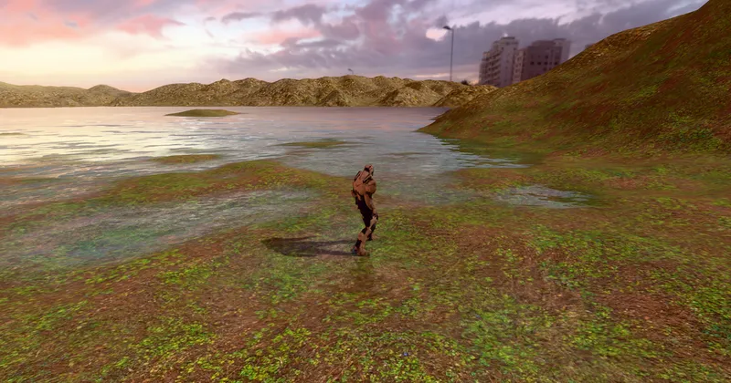

3D World & Simulation Landscape
Landscape & Water System - RedGPU WebGPU Example
Combines streaming terrain and Lake water with optics and walking ripples.
스트리밍 지형과 호수(Lake)를 결합해 수중 굴절과 보행 물결을 시연합니다.

3D World & Simulation Landscape
Combines streaming terrain and Lake water with optics and walking ripples.
스트리밍 지형과 호수(Lake)를 결합해 수중 굴절과 보행 물결을 시연합니다.
